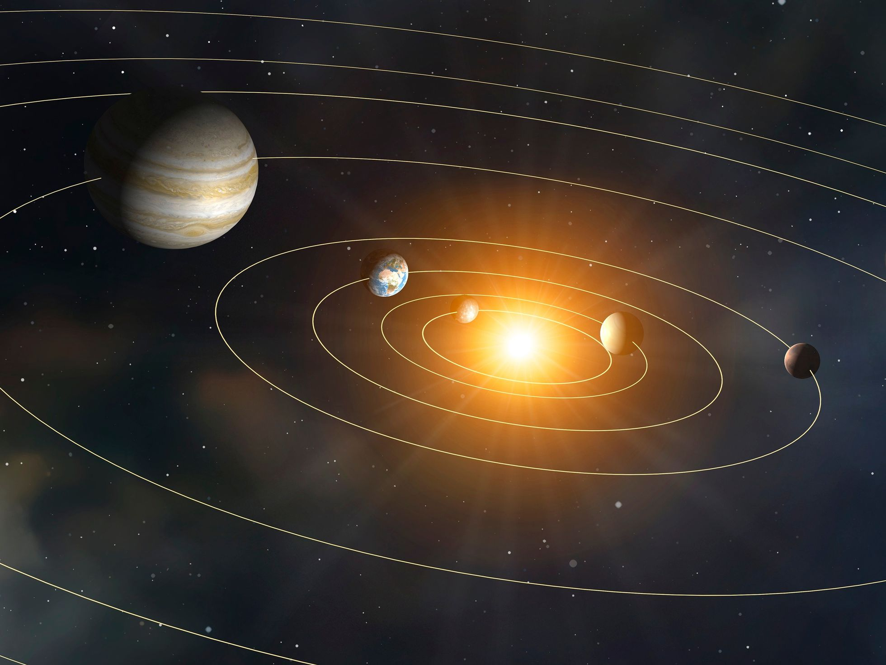
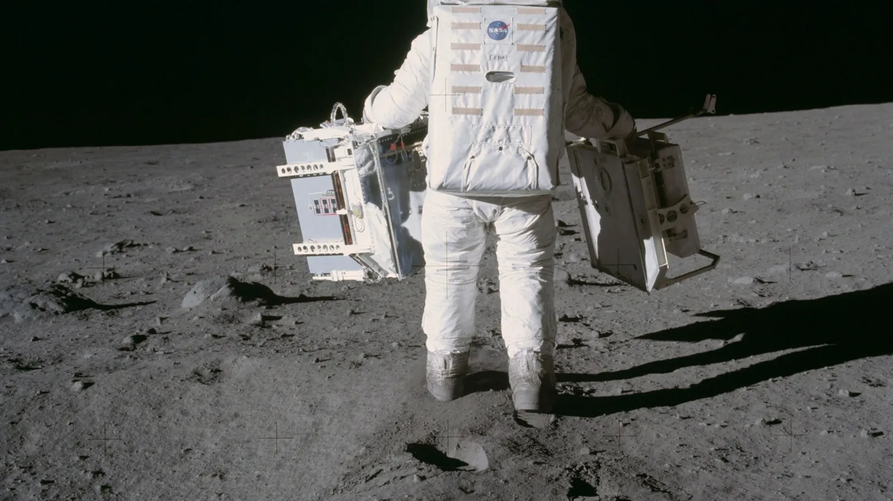
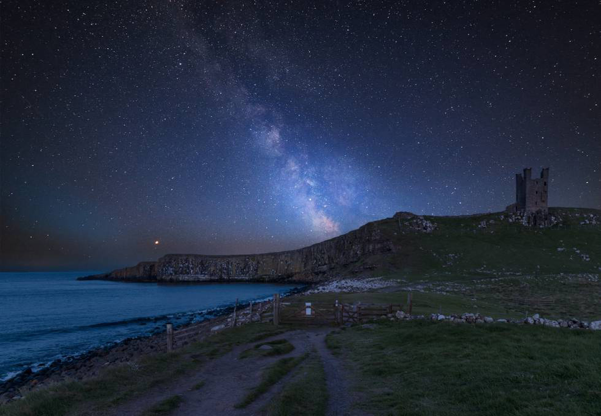

Tres planetas y un destino
Miércoles, 2 de marzo de 2022
Pablo G. Pérez González

Una ilustración del Sistema Solar
Nacieron de la misma madre, una nube de gas y polvo cósmico compuesta principalmente de hidrógeno y helio, con menos de un 2% de su masa en forma de otros elementos, entre los cuales podíamos encontrar el oxígeno, el silicio, el aluminio o el hierro. Elementos que, por otro lado, abundan en las piedras que vemos a nuestro alrededor, donde menos de un 0,2% de sus átomos son hidrógeno y helio. La nube comenzó con una densidad de solo unas miles de partículas por centímetro cúbico, trillones de veces menos densa que el aire de nuestra atmósfera, un tamaño decenas de veces mayor que el Sistema Solar hasta Neptuno, y una masa decenas de veces mayor que la del Sol. Y, sin embargo, la nube evolucionó muy rápidamente hasta formar una estrella y varios planetas en solo unas decenas o como mucho un centenar de millones de años. En un tiempo parecido al que llevan las ballenas en nuestro planeta se crearon varios mundos. Hoy conocemos 8 planetas en nuestro Sistema Solar, seguramente hubo o hay más, pero esa es otra historia.
Tuvieron como madrinas varias supernovas, que seguramente nacieron de la misma madre, empujando parte de la nube primigenia, ayudando a que se comprimiera por estos lares y se iniciara el proceso de incremento de la densidad en una determinada zona, aquí mismo, y por gravedad fue cayendo a más y más material para formar nuestro Sistema Solar. Sabemos de estas supernovas que influyeron en nuestro nacimiento porque nos dejaron como legado elementos raros, muchos radiactivos, y con mezclas extrañas que no casan bien con lo que más abunda en nuestros planetas. Pero esa es otra historia.
Tuvieron también un padre, lo que se llama un disco protoplanetario, gobernado por una estrella en formación, una protoestrella que se convertiría en Sol, cuya temperatura fue subiendo hasta llegar a alcanzar millones de grados en su centro, unos miles en su superficie, y siendo capaz de mantener caliente la zona circundante. Hasta una distancia no mucho más allá de la órbita de Marte, las temperaturas estaban por encima de los 0 grados centígrados. A ese nivel, el gas, que recordamos que daba cuenta del 98% de la masa de la nube original, estaba demasiado caliente para condensar. No se formaban gotitas ni de hidrógeno ni de helio, pero sí empezaron a juntarse motas de polvo de silicatos, haciéndose cada vez más grandes añadiendo hierro, magnesio, níquel, u oxígeno que oxidaba esos metales, entre otros elementos. La mezcla tendía a enfriarse, pero también se calentaba por choques entre rocas cósmicas, planetesimales cada vez más grandes, que además estaban más calientes en sus núcleos, por encima de los 1000 K, algo que en los últimos meses hemos aprendido que es el punto de fusión de muchas rocas, y que provocó que los elementos más pesados se hundieran y que los planetas tomaran formas cuasiesféricas. Pero esa es otra historia.
Tuvieron primos, hoy bastante lejanos, pero con los que quizás jugaron en su infancia, ya sea al pilla pilla o a tirarse piedras y bolas de nieve. De hecho, sin Júpiter quizás no tendríamos el agua que tenemos hoy. Quizás por culpa de Júpiter en algún momento estuvieron más cerca del Sol, o quizás se formaron algo más lejos de lo que hoy vemos, pero tampoco mucho más allá, por algo son planetas rocosos y la temperatura de la zona donde se formaron no pudo ser muy baja. Si las distancias al Sol no siempre fueron las mismas, quizás en algún momento Venus no recibía mucha más radiación solar que la que hoy llega a la Tierra, o Marte recibía más, pudiendo ambos albergar agua líquida. Pero esas son otras historias.
Sus orígenes comunes también debieron implicar que sus atmósferas fueran muy parecidas al principio de su evolución. Estaban tan calientes que ningún gas podía quedar atrapado por la gravedad de cada planeta, escapaba hacia el espacio, así que las grandes cantidades de hidrógeno o helio que había en la nube maternal nunca llegaron a formar una gran atmósfera. Ese sí fue el caso de planetas como Júpiter o Saturno, que tienen atmósferas que se denominan primarias, y pudieron crecer muchísimo más al poderse nutrir de los superabundantes hidrógeno y helio. Los planetas más cerca del Sol, al enfriarse poco a poco en su exterior y mantenerse calientes en su interior, fueron soltando gases que formaron atmósferas secundarias. La composición similar de los 3 planetas seguramente implicó que esas atmósferas fueran muy parecidas en sus orígenes, una combinación de los gases que normalmente liberan los volcanes: agua, dióxido de carbono y de azufre, o metano. De hecho, en la atmósfera de la Tierra cuando tenía menos de la mitad de edad de hoy, en torno a la transición entre el eón arcaico y el proterozoico, seguramente abundaban las nubes de ácido sulfúrico como las que hoy en día hay en Venus. Ahí hay más historias que explicarían por qué nuestro aire es “nitrógeno, oxígeno y argón”, como nos cantaba Mecano.
Concluimos ya. Tenemos 3 planetas hermanos cuyo origen es común, lo que hace que Venus, Tierra y Marte sean planetas llamados rocosos, terrestres o interiores. Su composición interna no es muy diferente, dominada por hierro, magnesio, silicio, oxígeno... Pero en algún momento empezaron a separar sus destinos. Hoy sus atmósferas son tremendamente distintas, quizás porque tienen otras diferencias notables, como la distancia al Sol, la presencia de un campo magnético fuerte o casi inexistente, periodos de rotación distintos, o satélites más o menos grandes o ausentes. El caso es que solo uno llegó a evolucionar para dar lugar a algo que hoy no podemos librarnos de considerar único, porque no la hemos visto en ningún otro sitio: la vida. ¿Por qué la Tierra? ¿Estaba destinada a ello? ¿Destinada a albergar vida o a mantenerla? ¿Los otros planetas rocosos albergaron vida alguna vez? ¿Hay algo que hizo inclinar la balanza hacia ser planetas inhóspitos frente a uno lleno de vida? ¿O fueron un cúmulo de factores? ¿Son muchos los factores que deben confabularse en un sistema planetario para que aparezca la vida? ¿Cuán probable es ese evento vital? ¿Es el universo suficientemente grande y viejo como para que, por muy baja que sea esa probabilidad, sea imposible que no haya vida más allá de nuestro planeta? Esas son otras historias, la mayor parte nunca escritas, ni siquiera concebidas.
Pablo G. Pérez González es investigador del Centro de Astrobiología, dependiente del Consejo Superior de Investigaciones Científicas y del Instituto Nacional de Técnica Aeroespacial (CAB/CSIC-INTA)
Noticias relacionadas

La guerra en Ucrania provoca la peor crisis espacial de la historia de Europa

La NASA crea un nuevo material "revolucionario"

SpaceX lanza hoy al espacio este satélite español para obtener imágenes térmicas de la Tierra

El ahora mismo no existe en el espacio

Entendiendo el universo desde el sofá una tarde de invierno

¿Qué le pasa a la ‘Voyager 1’?: la vieja sonda espacial ha mandado extraños mensajes tras años de silencio